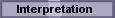
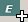

| Root icon
 |
Leaf icon |
| To record an interpretation of one or more Knowledge Nuggets. |
|
Write your own interpretation into the SentenceText text area. When you wish to map this interpretation to an Edict, you can click the button  in the tool bar for "EdictsImplementingMe". |
| N/A |
| N/A |